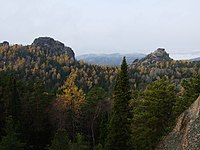

| № |
Название |
Расположение |
Площадь, км² |
Дата образования |
Вид |
| 1 |
Азас |
Тыва |
3003,90 |
11 января 1985 |
|
| 2 |
Алтайский заповедник |
Республика Алтай |
8812,38 |
16 апреля 1932 |

|
| 3 |
Астраханский заповедник |
Астраханская область |
679,17 |
11 апреля 1919 |

|
| 4 |
Байкало-Ленский заповедник |
Иркутская область |
6599,19 |
5 декабря 1986 |

|
| 5 |
Байкальский заповедник |
Бурятия |
1657,24 |
26 сентября 1969 |

|
| 6 |
Баргузинский заповедник |
Бурятия |
3743,22 |
11 января 1917 |

|
| 7 |
Басеги |
Пермский край |
379,35 |
1 октября 1982 |
|
| 8 |
Бастак |
Еврейская автономная область |
917,71 |
13 февраля 1997 |

|
| 9 |
Башкирский заповедник |
Башкортостан |
496,09 |
11 июля 1930 |

|
| 10 |
Белогорье |
Белгородская область |
21,31 |
13 июля 1979 |
|
| 11 |
Богдинско-Баскунчакский заповедник |
Астраханская область |
184,78 |
18 ноября 1997 |

|
| 12 |
Болоньский заповедник |
Хабаровский край |
1036,00 |
18 ноября 1997 |

|
| 13 |
Большая Кокшага |
Марий Эл |
214,05 |
14 марта 1993 |

|
| 14 |
Большехехцирский заповедник |
Хабаровский край |
454,71 |
3 октября 1963 |

|
| 15 |
Большой Арктический заповедник |
Красноярский край |
41 692,22 |
11 мая 1993 |

|
| 16 |
Ботчинский заповедник |
Хабаровский край |
2673,80 |
25 мая 1994 |

|
| 17 |
Брянский лес |
Брянская область |
121,86 |
14 июля 1987 |

|
| 18 |
Буреинский заповедник |
Хабаровский край |
3584,00 |
12 августа 1987 |

|
| 19 |
Верхне-Тазовский заповедник |
Ямало-Ненецкий автономный округ |
6313,08 |
24 декабря 1986 |

|
| 20 |
Висимский заповедник |
Свердловская область |
335,00 |
6 июля 1971 |

|
| 21 |
Витимский заповедник |
Иркутская область |
5858,38 |
20 мая 1982 |

|
| 22 |
Вишерский заповедник |
Пермский край |
2412,00 |
26 февраля 1991 |

|
| 23 |
Волжско-Камский заповедник |
Татарстан |
100,91 |
30 апреля 1960 |

|
| 24 |
Воронежский заповедник |
, Воронежская областьЛипецкая область |
310,53 |
3 декабря 1923 |

|
| 25 |
Воронинский заповедник |
Тамбовская область |
103,20 |
12 августа 1994 |

|
| 26 |
Восточно-Уральский заповедник |
Челябинская область |
166,16 |
9 апреля 1966 |

|
| 27 |
Галичья Гора |
Липецкая область |
2,3 |
25 апреля 1925 |

|
| 28 |
Гыданский заповедник |
Ямало-Ненецкий автономный округ |
8781,74 |
7 октября 1996 |
| 29 |
Дагестанский заповедник |
Дагестан |
190,61 |
9 января 1987 |

|
| 30 |
Дальневосточный морской заповедник |
Приморский край |
643,16 |
24 марта 1978 |

|
| 31 |
Дарвинский заповедник |
, Вологодская областьЯрославская область |
1126,30 |
18 июля 1945 |

|
| 32 |
Даурский заповедник |
Забайкальский край |
457,90 |
25 декабря 1987 |

|
| 33 |
Денежкин Камень |
Свердловская область |
781,92 |
16 августа 1991 |

|
| 34 |
Джергинский заповедник |
Бурятия |
2380,88 |
14 августа 1992 |

|
| 35 |
Джугджурский заповедник |
Хабаровский край |
8599,56 |
10 сентября 1990 |
| 36 |
Жигулёвский заповедник |
Самарская область |
231,57 |
19 августа 1927 |

|
| 37 |
Зейский заповедник |
Амурская область |
994,30 |
3 октября 1963 |

|
| 38 |
Ильменский заповедник |
Челябинская область |
303,80 |
14 мая 1920 |

|
| 39 |
Кабардино-Балкарский высокогорный заповедник |
Кабардино-Балкария |
826,42 |
8 января 1976 |

|
| 40 |
Кавказский заповедник |
,,АдыгеяКарачаево-ЧеркесияКраснодарский край |
2800,00 |
12 мая 1924 |

|
| 41 |
Калужские засеки |
Калужская область |
185,33 |
5 ноября 1992 |

|
| 42 |
Кандалакшский заповедник |
,Республика КарелияМурманская область |
705,30 |
7 сентября 1932 |

|
| 43 |
Катунский заповедник |
Республика Алтай |
1500,79 |
25 июля 1991 |

|
| 44 |
Кедровая Падь |
Приморский край |
178,97 |
1 января 1970 |

|
| 45 |
Керженский заповедник |
Нижегородская область |
467,89 |
23 апреля 1993 |

|
| 46 |
Кивач |
Республика Карелия |
108,80 |
11 июня 1931 |
|
| 47 |
Кологривский лес |
Костромская область |
589,40 |
21 января 2006 |

|
| 48 |
Командорский заповедник |
Камчатский край |
36 486,79 |
23 апреля 1993 |

|
| 49 |
Комсомольский заповедник |
Хабаровский край |
644,13 |
3 октября 1963 |

|
| 50 |
Корякский заповедник |
Камчатский край |
3271,56 |
26 декабря 1995 |

|
| 51 |
Костомукшский заповедник |
Республика Карелия |
475,69 |
14 декабря 1983 |

|
| 52 |
Кроноцкий заповедник |
Камчатский край |
11 476,19 |
1 июня 1934 |

|
| 53 |
Кузнецкий Алатау |
Кемеровская область |
4129,00 |
27 декабря 1989 |

|
| 54 |
Курильский заповедник |
Сахалинская область |
653,65 |
10 февраля 1984 |

|
| 55 |
Лазовский заповедник |
Приморский край |
1209,89 |
10 февраля 1935 |

|
| 56 |
Лапландский заповедник |
Мурманская область |
2784,35 |
17 января 1930 |

|
| 57 |
Магаданский заповедник |
Магаданская область |
8838,17 |
5 января 1982 |

|
| 58 |
Малая Сосьва |
Ханты-Мансийский автономный округ — Югра |
2255,62 |
17 февраля 1976 |
| 59 |
Мордовский заповедник |
Мордовия |
321,48 |
5 марта 1936 |

|
| 60 |
Ненецкий заповедник |
Ненецкий автономный округ |
3134,00 |
18 декабря 1997 |
| 61 |
Нижнесвирский заповедник |
Ленинградская область |
416,15 |
11 июня 1980 |

|
| 62 |
Норский заповедник |
Амурская область |
2111,68 |
2 февраля 1998 |
| 63 |
Нургуш |
Кировская область |
234,5 |
25 мая 1994 |
|
| 64 |
Окский заповедник |
Рязанская область |
557,28 |
10 февраля 1935 |

|
| 65 |
Олёкминский заповедник |
Якутия |
8471,02 |
3 января 1984 |

|
| 66 |
Оренбургский заповедник |
Оренбургская область |
216,53 |
12 мая 1989 |

|
| 67 |
Остров Врангеля |
Чукотский автономный округ |
22 256,50 |
23 марта 1976 |

|
| 68 |
Пасвик |
Мурманская область |
166,40 |
16 июля 1992 |
|
| 69 |
Печоро-Илычский заповедник |
Республика Коми |
7213,22 |
4 мая 1930 |

|
| 70 |
Пинежский заповедник |
Архангельская область |
518,90 |
20 августа 1974 |

|
| 71 |
Полистовский заповедник |
Псковская область |
379,83 |
25 мая 1994 |

|
| 72 |
Поронайский заповедник |
Сахалинская область |
566,94 |
30 марта 1988 |

|
| 73 |
Приволжская лесостепь |
,Пензенская областьУльяновская область |
83,73 |
26 июля 1989 |

|
| 74 |
Приокско-Террасный заповедник |
Московская область |
49,45 |
19 июня 1945 |

|
| 75 |
Присурский заповедник |
Чувашия |
91,48 |
27 декабря 1995 |
| 76 |
Путоранский заповедник |
Красноярский край |
18 872,51 |
15 декабря 1988 |

|
| 77 |
Рдейский заповедник |
Новгородская область |
369,22 |
25 мая 1994 |

|
| 78 |
Ростовский заповедник |
Ростовская область |
95,32 |
27 декабря 1995 |

|
| 79 |
Саяно-Шушенский заповедник |
Красноярский край |
3903,68 |
17 марта 1976 |

|
| 80 |
Северо-Осетинский заповедник |
Северная Осетия |
295,39 |
7 сентября 1967 |

|
| 81 |
Сихотэ-Алинский заповедник |
Приморский край |
4014,28 |
10 февраля 1935 |

|
| 82 |
Сохондинский заповедник |
Забайкальский край |
2109,88 |
11 декабря 1973 |
| 83 |
Столбы |
Красноярский край |
471,54 |
30 июня 1925 |

|
| 84 |
Таймырский заповедник |
Красноярский край |
17 819,28 |
23 февраля 1979 |

|
| 85 |
Тебердинский заповедник |
Карачаево-Черкесия |
850,64 |
23 января 1936 |

|
| 86 |
Тигирекский заповедник |
Алтайский край |
406,93 |
4 декабря 1999 |

|
| 87 |
Тунгусский заповедник |
Красноярский край |
2965,62 |
9 октября 1995 |

|
| 88 |
Убсунурская котловина |
Тыва |
] |
24 января 1993 |

|
| 89 |
Уссурийский заповедник |
Приморский край |
404,32 |
1 января 1970 |

|
| 90 |
Усть-Ленский заповедник |
Якутия |
14 330,00 |
18 декабря 1985 |

|
| 91 |
Утриш |
Краснодарский край |
100,08 |
2 октября 2010 |
|
| 92 |
Хакасский заповедник |
Хакасия |
2675,65 |
4 сентября 1999 |

|
| 93 |
Ханкайский заповедник |
Приморский край |
392,89 |
28 декабря 1990 |

|
| 94 |
Хинганский заповедник |
Амурская область |
970,73 |
3 октября 1963 |

|
| 95 |
Хопёрский заповедник |
Воронежская область |
161,78 |
10 февраля 1935 |

|
| 96 |
Центрально-Лесной заповедник |
Тверская область |
244,47 |
4 мая 1930 |

|
| 97 |
Центрально-Чернозёмный заповедник |
Курская область |
52,87 |
10 февраля 1935 |

|
| 98 |
Центральносибирский заповедник |
Красноярский край |
9720,17 |
9 января 1985 |

|
| 99 |
Чёрные земли |
Калмыкия |
1219,00 |
11 июня 1990 |

|
| 100 |
Шайтан-Тау |
Оренбургская область |
67,26 |
9 октября 2014 |
|
| 101 |
Шульган-Таш |
Башкортостан |
225,31 |
16 января 1986 |
|
| 102 |
Эрзи |
Ингушетия |
59,70 |
21 декабря 2000 |
|
| 103 |
Юганский заповедник |
Ханты-Мансийский автономный округ — Югра |
6486,58 |
31 мая 1982 |

|
| 104 |
Южно-Уральский заповедник |
,БашкортостанЧелябинская область |
2528,00 |
19 июня 1978 |

|
| 105 |
Восток Финского залива |
Ленинградская область |
140,8627 |
21 декабря 2017 |

|
| 106 |
Васюганский заповедник |
,Томская областьНовосибирская область |
6148,03 |
16 декабря 2017 |
| 107 |
Казантипский заповедник |
Крым |
4,5 |
12 мая 1998 |

|
| 108 |
Карадагский заповедник |
28,74 |
9 августа 1979 |

|
| 109 |
Лебяжьи острова |
96,12 |
9 февраля 1949 |
| 110 |
Опукский заповедник |
15,92 |
12 мая 1998 |

|
| 111 |
Ялтинский горно-лесной заповедник |
144,6 |
20 февраля 1973 |

|
| 112 |
Медвежьи острова |
Якутия |
8155,7 |
30 июня 2020 |

|